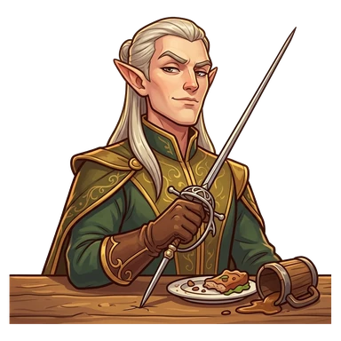
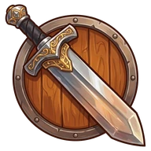
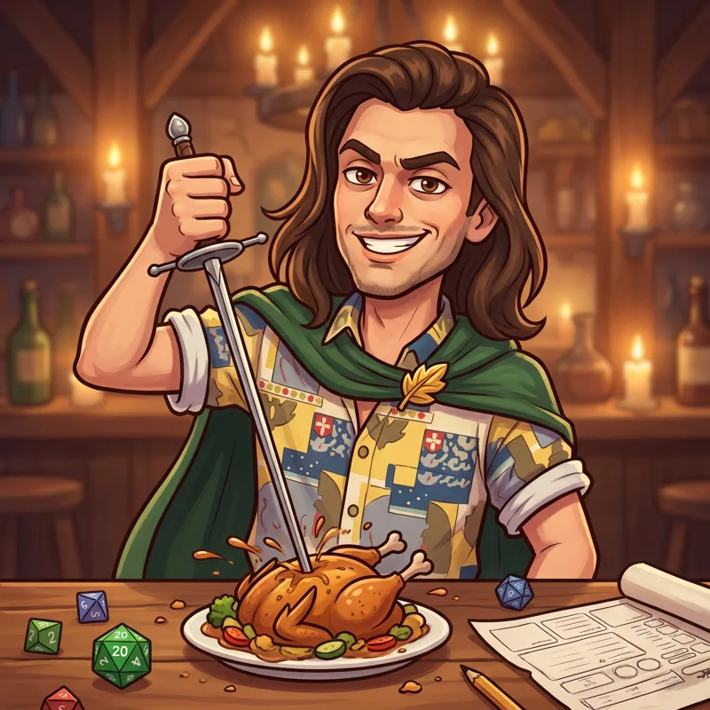

Varis


WarriorVaris, Scourge of Tables
After their quest: Varis, Scourge of Kings
Introduced himself by stabbing his rapier into the middle of the party's table. Still hasn't paid for the plate he ruined.
Ability
Grand entrance: +25% chance of a Resounding success
That's the value at Lv 10: at Lv 1 it's half and it grows every level.
How to get them
Shows up as a recruit candidate at the Inn.
Quest
Varis at the Governor's banquet · Argenen
How it ends · Show spoiler
Varis stabbed his rapier into the royal banquet table. The Governor lost his appetite. And his job.
Party names
Show spoiler
- Law and Disorder: Varis + Bron
- Back Door Entrance: Carrlos + Varis
- Grand Entrances: Vavhal Gavone + Varis
- Brawn and Brocade: Kupgush + Varis
Chronicles
They unlock in-game as they level up. Each gives 1 Rune the first time you read it.
Chapter 1 (Lv 1) · Show spoiler
The entrance
Varis is an elf, and he wants you to know it. Tall, elegant, perfect hair and an opinion about everything. The day he met the party, he didn't say hello: he walked into the tavern, strode up to the table and drove his rapier into the middle of it, straight through a bowl of phoenix stew. "My name is Varis," he said. Everyone stared at him. That was exactly the point. He still hasn't paid for the bowl.
Chapter 2 (Lv 5) · Show spoiler
Rehearsals
Varis's entrances look improvised. They aren't. He rehearses them every night in front of the mirror: the angle of the cape, the gleam of the rapier, the pause before speaking. When they work, the expedition goes spectacularly. The problem is Carrlos, who always measures twice and slips in through the back door, silently, before Varis finishes opening the front one. Varis will never forgive him. Carrlos hasn't noticed.
Chapter 3 (after their quest) · Show spoiler
The Governor's banquet
In Argenen, the Governor threw a banquet for the nobles while the city went hungry. Varis slipped in uninvited, walked to the head of the table and drove his rapier into the middle of the royal table, straight through the roast duck. "My name is Varis," he said. It was the best entrance of his life. The Governor lost his appetite. And, shortly after, his office. Since that day he is no longer the Scourge of Tables: he is Varis, Scourge of Kings.
Chapter 4 (Lv 15) · Show spoiler
Varis's table
Every table at the Inn has a hole in the middle. TomTom stopped replacing them. Instead, he had a special table made, iron-reinforced oak, with a sign that reads "FOR VARIS." Varis ignores it and keeps stabbing the others. He says a table made to be stabbed has no charm. TomTom says he'll charge him for it. He never has.
Chapter 5 (Lv 20) · Show spoiler
Sitting down
One night, after a long expedition, Varis arrived at the Inn, leaned his rapier against the wall and sat down. Just like that. Without stabbing anything. The party went silent, then gave him a standing ovation. Varis was deeply offended: it was the first time they had applauded him and he wasn't ready. The next day he went back to stabbing the table. But they say that night he slept with a smile.
Their player

This character is played by a real player from the D&D campaign that inspired the game.